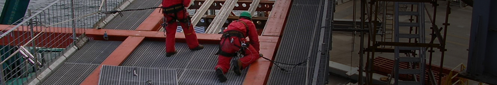

联系我们联系我们联系我们联系我们联系我们联系我们联系我们联系我们联系我们联系我们联系我们联系我们联系我们， 联系我们联系我们联系我们联系我们联系我们联系我们联系我们联系我们联系我们联系我们联系我们联系我们联系我们， 联系我们联系我们联系我们联系我们联系我们联系我们联系我们联系我们联系我们联系我们联系我们联系我们联系我们， 联系我们联系我们联系我们联系我们联系我们联系我们联系我们联系我们联系我们联系我们联系我们联系我们联系我们， 联系我们联系我们联系我们联系我们联系我们联系我们联系我们联系我们联系我们联系我们联系我们联系我们联系我们。 